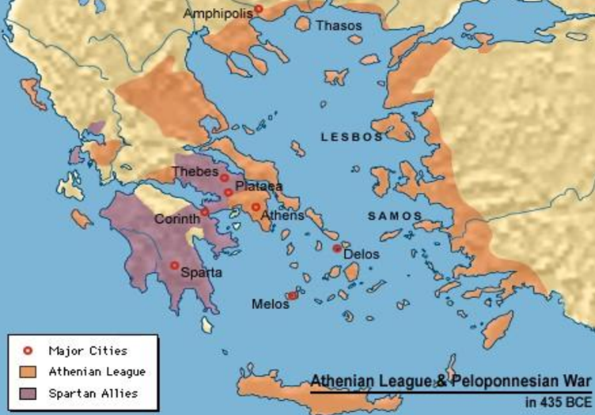

Genesis
The Peloponnesian War was a war fought in ancient Greece between Athens and Sparta, the two most powerful city-states in ancient Greece at the time. As the story goes, Athens was not a popular polis; they were exorting and manipulating other members of the Delian League, forcing them to contribute either ships or money. The Athenians would also interfere in political aspects of other poleis, especially those that had some connection with Sparta (e.g., the cities of Miletus and Samos).
In 435 B.C., the Athenians established a colony in Amphipolis, which had very rich silver mines. However, what really upset the Spartans was Athens getting involved in a war between Corinth (Spartan ally) and Corcyra. Furthermore, two years later, the Athenians issued the Megarian Decree in Megara, which was a prohibition for any Greek polis to trade with Megara. The discontent of these two states (Corinth and Megara), along with another city's, called Aegina (member of the Delian League) led them to complain to Sparta in 432 B.C. A year later, the Peloponnesian League declared war against Athens because of their misconduct, a war that divides two phases: the Archidamian War and the Decelean War.